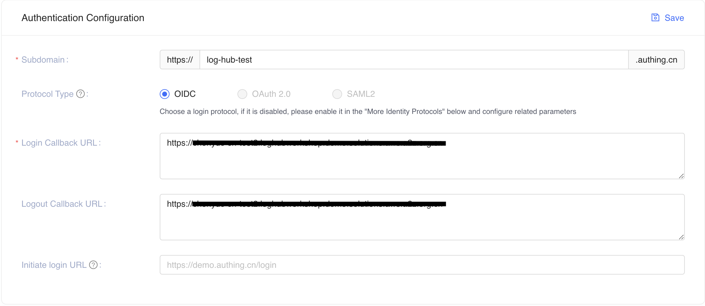
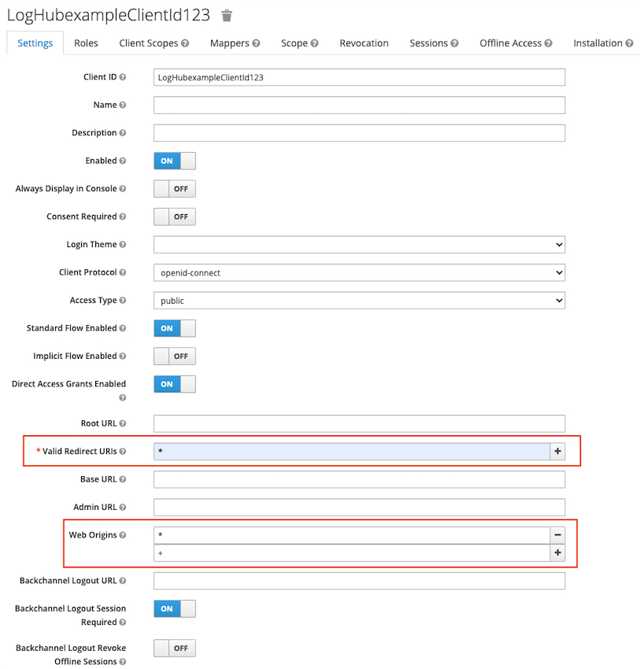

在 AWS 中国区域部署
部署时间：大约 30 分钟
前提条件
- ICP 许可域。 Log Hub 控制台通过 CloudFront 分发提供服务，该分发被视为 Internet 信息服务。也称为 Log Hub 控制台域名。
- AWS IAM 中的 SSL 证书。 SSL 证书必须与给定的域相关联。 有关更多信息，请参阅上传服务器证书。
部署概览
使用以下步骤在 AWS 上部署此解决方案。
步骤 1. 创建 OIDC 客户端
AWS 中国区域不支持 Cognito 用户池。 如果您选择在 AWS 中国区域部署解决方案，则需要 OpenID 连接器 (OIDC) 客户端。
您可以使用不同类型的 OpenID 连接器 (OIDC) 提供商。在本节中，我们将介绍选项 1 和选项 2。
按照以下步骤创建 OIDC 客户端，并获取 client_id 和 issuer。
(选项 1) Authing.cn OIDC 客户端
- 登录Authing 控制台。
- 如果您还没有用户池，先创建一个用户池。
- 选择用户池。
- 在左侧导航栏，选择应用下的自建应用。
- 单击创建自建应用按钮。
- 输入应用名称和认证地址。
-
将Endpoint Information中的
App ID（即client_id）和Issuer保存到一个文本文件中，以备后面使用。
-
将
Login Callback URL和Logout Callback URL更新为IPC记录的域名。  -
设置以下授权配置。

{kind=link}
您已经成功创建了一个身份验证自建应用程序。
(选项 2) Keycloak OIDC 客户端
- 按照本指南 在AWS中国区域部署 Keycloak 解决方案。
- 确保您可以登录 Keycloak 控制台。
- 在左侧导航栏，选择 Add Realm。如果您已经有一个 Realm，请跳过此步骤。
- 进入领域设置页面。选择 Endpoints，然后从列表中选择 OpenID Endpoint Configuration。

- 在浏览器打开的 JSON 文件中，记录 issuer 值，以备后面使用。
{kind=link}
- 返回Keycloak控制台，在左侧导航栏选择Clients，然后选择Create。
- 输入客户 ID，必须包含 24 个字母（不区分大小写）或数字。记录 Client ID，以备后面使用。
-
更改Client设置，在 Valid Redirect URIs 处输入
https://<Log Hub 控制台域名>，在 Web Origins 输入*和+。如下图所示：  -
选择左侧导航栏的 Users。
- 点击 Add user，并输入 username。
- 创建用户后，选择Credentials，输入Password。
{kind=link}
Issuer 的值的格式为 https://<KEYCLOAK_DOMAIN_NAME>/auth/realms/<REALM_NAME>。
步骤 2. 启动堆栈
-
登录 AWS 管理控制台并使用下面的按钮启动
log-hubAWS CloudFormation 模板。
-
登录控制台后，模板在默认区域启动。要在不同的 AWS 区域中启动 Log Hub 解决方案，请使用控制台导航栏中的区域选择器。
- 在 创建堆栈 页面上，验证正确的模板 URL 显示在 Amazon S3 URL 文本框中，然后选择 下一步。
- 在 指定堆栈详细信息 页面上，为您的解决方案堆栈分配一个名称。有关命名字符限制的信息，请参阅 IAM 和 STS 限制 中的 AWS Identity and Access Management 用户指南。
-
在 参数 部分，查看模板的参数并根据需要进行修改。此解决方案使用以下默认值。
参数 默认 说明 OidcClientId 无 OpenId 连接器客户端 ID。 OidcProvider 无 OpenId 连接器提供者发行者。发行者必须以 https://Domain 无 Log Hub 控制台的自定义域。切记不要添加 http(s)前缀。IamCertificateID 无 IAM 中 SSL 证书的 ID。 ID 由 21 个大写字母和数字字符组成。您可以使用 list-server-certificates命令检索 ID。 -
选择下一步。
- 在 配置堆栈选项 页面上，选择 下一步。
- 在 审核 页面上，查看并确认设置。选中确认模板创建 AWS Identity and Access Management (IAM) 资源的复选框。
- 选择 创建堆栈 部署堆栈。
您可以在 AWS CloudFormation 控制台的 状态 列中查看堆栈的状态。您应该会在大约 15 分钟内收到 CREATE_COMPLETE 状态。
步骤 3. 配置 DNS 解析
此解决方案预置 CloudFront 分配，让您可以访问 Log Hub 控制台。
- 登录 AWS CloudFormation 控制台。
- 选择解决方案的堆栈。
- 选择输出选项卡。
- 获取WebConsoleUrl 作为解析地址。
- 在 DNS 解析器中创建 CNAME 记录，指向该解析地址。
步骤 4. 登录控制台
重要
您的登录凭据（用户名和密码）由 OIDC 提供商管理。 在登录 Log Hub 控制台之前，请确保您已在 OIDC 提供商的用户池中创建了至少一个用户。
- 登录到 AWS CloudFormation 控制台。
- 选择解决方案的堆栈。
- 选择输出选项卡。
- 使用网页浏览器打开 OIDC Customer Domain URL。
- 选择 登录 Log Hub，然后导航到 OIDC 提供商。
- 输入用户名和密码。 您可能会被要求更改首次登录的默认密码，这取决于您的 OIDC 提供商的政策。
- 验证完成后，系统打开 Log Hub 网页控制台。
后续操作：登录 Log Hub 控制台之后，您可以 导入 AOS 域 并构建日志分析管道。